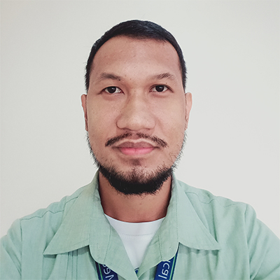

Summary
A hardworking and dedicated person who is willing to learn and to explore and to put in the work with passion to achieve the goal.
Education
Bachelor of Science in Information Technology - St. Catherine's College (2008 - 2012)
Work Experience
-
IT Assistant - Supercare Medical Services
2019 - Present
- Computer Hardware repair
- Configures routers and access points
- Network support
- Systems support
-
EDP Staff - Gaisano Grand Malls
2013 - 2018
- Performs Daily Server process
- Printer Repair
- Systems Support
Skills
- Hardworking
- Responsible
- Good Customer Service
Awards
- Employee of the Year 2021 - Supercare Medical Services
- Employee of the Year Nominee 2020 - Supercare Medical Services
- Punctual Awardee 2021, 2022 , 2023 - Supercare Medical Services
Personal Interests